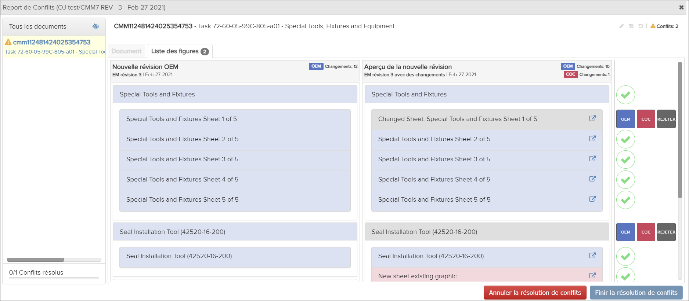

Non applicable pour Pinpoint Standalone Light.
Les utilisateurs doivent disposer des autorisations pour le privilège Peut fusionner de nouvelles révisions pour afficher un rapport de fusion.
-
Cliquez sur l'option Voir rapport dans la colonne
Actions sur le côté droit de la boîte de
dialogue.
Le Report de Conflits apparaît:

Document Exemple d'onglet

Liste des figures Exemple d'onglet
L'icône Afficher les documents sans différence importante dans le panneau Tous les documents vous permet d'afficher ou de masquer des documents avec des modifications non importantes. Par défaut, ces documents sont masqués. Vous pouvez basculer cette icône pour afficher tous les documents.
Le Report de Conflits montre les conflits qui existent entre les révisions. Reportez-vous à Résoudre les conflits de révision pour les étapes de résolution des conflits.